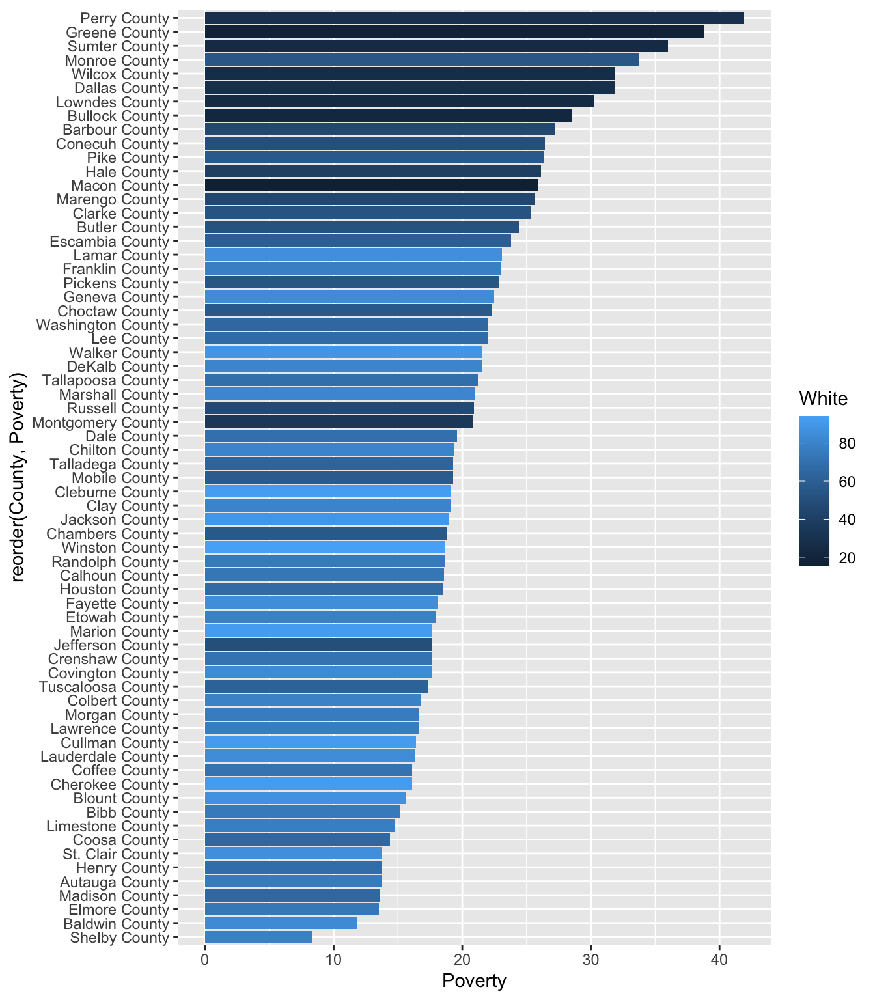

In this guided practice, we will see how to make complex data transformations with tidyverse. We will work with the COVID-19 cases in USA dataset at state level. First, let’s read the dataframe.
# A tibble: 15,633 × 55
date state positive probableCases negative pending totalTestResultsSource
<dbl> <chr> <dbl> <dbl> <dbl> <dbl> <chr>
1 20201206 AK 35720 NA 1042056 NA totalTestsViral
2 20201206 AL 269877 45962 1421126 NA totalTestsPeopleViral
3 20201206 AR 170924 22753 1614979 NA totalTestsViral
4 20201206 AS 0 NA 2140 NA totalTestsViral
5 20201206 AZ 364276 12590 2018813 NA totalTestsPeopleViral
6 20201206 CA 1341700 NA 23853346 NA totalTestsViral
7 20201206 CO 260581 11069 1608829 NA totalTestEncountersVi…
8 20201206 CT 127715 8131 3294383 NA posNeg
9 20201206 DC 23136 NA 711497 NA totalTestEncountersVi…
10 20201206 DE 39912 1550 400854 NA totalTestEncountersVi…
# ℹ 15,623 more rows
# ℹ 48 more variables: totalTestResults <dbl>, hospitalizedCurrently <dbl>,
# hospitalizedCumulative <dbl>, inIcuCurrently <dbl>, inIcuCumulative <dbl>,
# onVentilatorCurrently <dbl>, onVentilatorCumulative <dbl>, recovered <dbl>,
# dataQualityGrade <chr>, lastUpdateEt <chr>, dateModified <dttm>,
# checkTimeEt <chr>, death <dbl>, hospitalized <dbl>, dateChecked <dttm>,
# totalTestsViral <dbl>, positiveTestsViral <dbl>, …
Let’s get Tidy
select()
As we can see, it contains over 55 columns. Our first step will be to select some variables, the ones we want to work with. In this case, we have chosen date, state, positive, negative and probable cases, the test source and number of results, and the cumulative information in hospitals. We can do this with the function select(). We can simply use it writing the name of the variables we want manually, but we can also combine it with the renaming of variables and select variables that match a pattern.
data <- data %>%select(date, state, positive, probable_cases = probableCases, negative, contains("totalTests"))
Here, we renamed probableCases as probable_cases while we selected it into our new dataframe. We also introduced the verb contains(), which is a useful function to select variables that match a pattern. The complete list of verbs available are:
starts_with(): Starts with an exact prefix.
ends_with(): Ends with an exact suffix.
contains(): Contains a literal string.
matches(): Matches a regular expression.
num_range(x, 1:3): Matches a numerical range like x1, x2, x3.
These functions are what tidyverse calls selection helpers for variables. We will return to them in different examples of this practice. For now, it is enough to know that these are a domain-specific language for selecting specific variables.
lubridate
Now, we want to transform the format of our variables. For example, date is stored as a numeric variable:
class(data$date)
[1] "numeric"
We want to transform it to a date format. We will import lubridate in order to do so:
library(lubridate)
Now, we need to parse1 our date column with lubridate functions to correct it. To generate date objects, we can call a function using y, m, and d in the order in which the year (y), month (m), and date (d) appear in our data.
data <- data %>%mutate(date =ymd(date))class(data$date)
[1] "Date"
This works for data in a numeric format, but also as strings!
#Month-day-year mdy("March 28th, 2023")
[1] "2023-03-28"
We could also be interested in creating columns extracting year, month and day in separate variables.
data %>%mutate(year =year(date),month =month(date),day =day(date)) %>%select(date, year:day, state:totalTestsAntigen)
# A tibble: 15,633 × 14
date year month day state positive probable_cases negative
<date> <dbl> <dbl> <int> <chr> <dbl> <dbl> <dbl>
1 2020-12-06 2020 12 6 AK 35720 NA 1042056
2 2020-12-06 2020 12 6 AL 269877 45962 1421126
3 2020-12-06 2020 12 6 AR 170924 22753 1614979
4 2020-12-06 2020 12 6 AS 0 NA 2140
5 2020-12-06 2020 12 6 AZ 364276 12590 2018813
6 2020-12-06 2020 12 6 CA 1341700 NA 23853346
7 2020-12-06 2020 12 6 CO 260581 11069 1608829
8 2020-12-06 2020 12 6 CT 127715 8131 3294383
9 2020-12-06 2020 12 6 DC 23136 NA 711497
10 2020-12-06 2020 12 6 DE 39912 1550 400854
# ℹ 15,623 more rows
# ℹ 6 more variables: totalTestsViral <dbl>, totalTestsPeopleViral <dbl>,
# totalTestsAntibody <dbl>, totalTestsPeopleAntibody <dbl>,
# totalTestsPeopleAntigen <dbl>, totalTestsAntigen <dbl>
We created three new columns. But since they were added, by default, to the end of the dataframe, we also used the selection step to reorder the variables. We used the selection helper : to get an interval of columns. Writing year:day extracts all the columns year, day, and every other one between them. It is the same as writing select(year, month, day), but saving up some lines of code. This is specially useful for when we want to select a large number of variables, like the ones between state and totalTestResultsIncrease.
Quick quality check
We are interested in knowing the number of different types of tests each state had. We have the information regarding the type of tests in the columns that start with totalTests.
totalTestsViral: Total number of PCR tests (or specimens tested) as reported by the state or territory.
totalTestsPeopleViral: Total number of unique people tested at least once via PCR testing, as reported by the state or territory.
totalTestsAntibody: Total number of completed antibody tests as reported by the state or territory.
totalTestsPeopleAntibody:The total number of unique people who have been tested at least once via antibody testing as reported by the state or territory.
totalTestsAntigen: Total number of completed antigen tests, as reported by the state or territory.
totalTestsPeopleAntigen: Total number of unique people who have been tested at least once via antigen testing, as reported by the state or territory
According to this documentation, the total number of tests should include the total number of people who were tested. However, some states didn’t register the information like so. Take for example Arizona:
data %>%filter(state =="AZ")
# A tibble: 278 × 11
date state positive probable_cases negative totalTestsViral
<date> <chr> <dbl> <dbl> <dbl> <dbl>
1 2020-12-06 AZ 364276 12590 2018813 NA
2 2020-12-05 AZ 358900 12139 2003152 NA
3 2020-12-04 AZ 352101 11634 1986277 NA
4 2020-12-03 AZ 346421 11173 1969836 NA
5 2020-12-02 AZ 340979 10662 1957887 NA
6 2020-12-01 AZ 337139 10301 1945076 NA
7 2020-11-30 AZ 326817 10077 1936949 NA
8 2020-11-29 AZ 325995 9989 1920319 NA
9 2020-11-28 AZ 322774 9909 1905019 NA
10 2020-11-27 AZ 318638 9772 1894651 NA
# ℹ 268 more rows
# ℹ 5 more variables: totalTestsPeopleViral <dbl>, totalTestsAntibody <dbl>,
# totalTestsPeopleAntibody <dbl>, totalTestsPeopleAntigen <dbl>,
# totalTestsAntigen <dbl>
We see that they registered the number of total PCR tests in the column of total people who were tested. So in order to get the complete number of type of tests per state, without duplicating the values, we will make a conditional replacement of the column.
We are going to make use of the scoped variant of mutate, mutate_at, in order to change the values of multiple columns. Scoped variants of tidyverse verbs apply an expression (sometimes several) to all variables within a specified subset. This subset can contain:
all variables (_all variants)
a vars(), selection of multiple variables of different type (_at variants)
or variables selected with a predicate (_if variants)
When we use mutate_at, we must call the variables in a vars() argument, to indicate that we are selecting columns of the dataframe. Next, we will combine this with the function case_when(). case_when() allows us to vectorise multiple if_else() statements, where each case is evaluated sequentially and the first match for each element determines the corresponding value in the output vector.
data <- data %>%mutate_at(vars(totalTestsAntibody), ~case_when(is.na(.) ~ totalTestsPeopleAntibody,TRUE~ .),vars(totalTestsViral), ~case_when(is.na(.) ~ totalTestsPeopleViral,TRUE~ .),vars(totalTestsAntigen), ~case_when(is.na(.) ~ totalTestsPeopleAntigen,TRUE~ .) )
Reshaping and summarizing data
Now, we can use transformations to summarize and get aggregated information from our data. For example,
In order to get this information, we need to reshape our tidy, wide data into a long format. We will do this with the function pivot_longer().
# A tibble: 93,798 × 4
date state type_test n
<date> <chr> <chr> <dbl>
1 2020-12-06 AK totalTestsViral 1077776
2 2020-12-06 AK totalTestsPeopleViral NA
3 2020-12-06 AK totalTestsAntibody NA
4 2020-12-06 AK totalTestsPeopleAntibody NA
5 2020-12-06 AK totalTestsPeopleAntigen NA
6 2020-12-06 AK totalTestsAntigen NA
7 2020-12-06 AL totalTestsViral NA
8 2020-12-06 AL totalTestsPeopleViral 1645041
9 2020-12-06 AL totalTestsAntibody 74784
10 2020-12-06 AL totalTestsPeopleAntibody 74784
# ℹ 93,788 more rows
Since the data about tested people is now in the totalTests types of variables, we can remove the rows that contain “totalTestsPeople” in their name.
# A tibble: 46,899 × 4
date state type_test n
<date> <chr> <chr> <dbl>
1 2020-12-06 AK PCR 1077776
2 2020-12-06 AK Antibody NA
3 2020-12-06 AK Antigen NA
4 2020-12-06 AL PCR NA
5 2020-12-06 AL Antibody 74784
6 2020-12-06 AL Antigen NA
7 2020-12-06 AR PCR 1763150
8 2020-12-06 AR Antibody NA
9 2020-12-06 AR Antigen 21856
10 2020-12-06 AS PCR 2140
# ℹ 46,889 more rows
Now we can group and count the number of tests per state. We will make use of two functions:
group_by(): we will pass the names of the variables we want to use as grouping criteria, in our case state and type_test.
summarise(): this is a function that is used to compute summary statistics for a group of data. First, we need to set the name of the output variable. We will use total_n. Then, we need to apply the summary statistic we want to use. In our case, we want to get the sum() of the values in n for each group. Since our dataset has many NA values in the column we want to add, we will set the parameter na.rm = TRUE, so these values are removed.
`summarise()` has grouped output by 'state'. You can override using the
`.groups` argument.
grouped_data
# A tibble: 168 × 3
# Groups: state [56]
state type_test total_n
<chr> <chr> <dbl>
1 AK Antibody 0
2 AK Antigen 0
3 AK PCR 78690463
4 AL Antibody 6090878
5 AL Antigen 0
6 AL PCR 0
7 AR Antibody 0
8 AR Antigen 2261053
9 AR PCR 159758326
10 AS Antibody 0
# ℹ 158 more rows
Merging data
Now, we will practice how to merge different dataframes, by looking into the relationship between COVID-19 cases and deaths in counties and the proportion of black population based on the 2017 US Census. First, we will read the two datasets:
Rows: 800437 Columns: 6
── Column specification ────────────────────────────────────────────────────────
Delimiter: ","
chr (2): county, state
dbl (3): fips, cases, deaths
date (1): date
ℹ Use `spec()` to retrieve the full column specification for this data.
ℹ Specify the column types or set `show_col_types = FALSE` to quiet this message.
Rows: 3220 Columns: 37
── Column specification ────────────────────────────────────────────────────────
Delimiter: ","
chr (2): State, County
dbl (35): CountyId, TotalPop, Men, Women, Hispanic, White, Black, Native, As...
ℹ Use `spec()` to retrieve the full column specification for this data.
ℹ Specify the column types or set `show_col_types = FALSE` to quiet this message.
county_data contains information regarding daily cases and deaths per county in the US. First, we will get the total counts of both cases and deaths in 2020, grouping the information.
`summarise()` has grouped output by 'county', 'state'. You can override using
the `.groups` argument.
grouped_county %>%arrange(-total_cases)
# A tibble: 3,272 × 5
# Groups: county, state [3,272]
county state fips total_cases total_deaths
<chr> <chr> <dbl> <dbl> <dbl>
1 New York City New York NA 56135658 5331870
2 Los Angeles California 6037 44307464 1102330
3 Cook Illinois 17031 29910215 1069364
4 Miami-Dade Florida 12086 26008017 476285
5 Maricopa Arizona 4013 22970785 489299
6 Harris Texas 48201 20161359 350475
7 Dallas Texas 48113 13506071 175342
8 Broward Florida 12011 11924547 208330
9 Nassau New York 36059 10754300 560451
10 Clark Nevada 32003 10742491 210297
# ℹ 3,262 more rows
We can join the census data information with our COVID cases data, by FIPS code. Since some of the counties in our dataset do not contain this code, we will perform an inner_join in order to remove these cases. Of course, for a serious analysis, it would be necessary to check which counties are being ignored and what could be the consequences of this.
joined_county <- grouped_county %>%inner_join(census_subset, by =c("fips"="CountyId"))joined_county
We want to look at the relationship between COVID cases and proportion of black population in each county. We can’t base this information on absolute number of cases. Counties with a larger population will contain a larger number of COVID cases, so we have to control this information by county. Although the data is from 2017, it is still an useful way to control the proportion of historically big and small counties.
# A tibble: 3,212 × 9
# Groups: county, state [3,212]
county state fips total_cases total_deaths TotalPop Black cases_pop
<chr> <chr> <dbl> <dbl> <dbl> <dbl> <dbl> <dbl>
1 Hancock Georg… 13141 69015 7503 8667 72.9 7.96
2 Randolph Georg… 13243 63300 5957 7206 59.7 8.78
3 Terrell Georg… 13273 68844 6793 8978 60.6 7.67
4 Early Georg… 13099 94266 7263 10405 50.5 9.06
5 Emporia city Virgi… 51595 42697 3726 5495 64.3 7.77
6 Galax city Virgi… 51640 72124 4377 6788 7.2 10.6
7 McKinley New M… 35031 869589 44943 72849 0.5 11.9
8 Neshoba Missi… 28099 287790 18099 29437 20.9 9.78
9 Essex New J… 34013 4975781 454376 800401 38.8 6.22
10 East Feliciana Louis… 22037 220597 11087 19553 44.4 11.3
# ℹ 3,202 more rows
# ℹ 1 more variable: deaths_pop <dbl>
Just by looking at this print of information, it appears that counties with a big proportion of black population had a bigger proportion of COVID deaths per capita. Let’s summarize this information to check:
joined_county <- joined_county %>%mutate(black_categorical =case_when( Black >=50~"Over 50% of the population is black", Black <50~"Under 50% of the population is black" ))joined_county %>%group_by(black_categorical) %>%summarise(median_cases =median(cases_pop, na.rm = T),median_deaths =median(deaths_pop, na.rm = T) )
# A tibble: 2 × 3
black_categorical median_cases median_deaths
<chr> <dbl> <dbl>
1 Over 50% of the population is black 6.40 0.173
2 Under 50% of the population is black 2.90 0.0437
With this information, we can see that racial disparities can be shown through Coronavirus data. These disparities were the result of pre-pandemic realities, of a social and economic structure of domination that has limited access to health and wealth for people of color.
Envisioning information
The basics: plot()
The basic function that comes with R base to make graphs is plot(). Its most basic functionality is to show all the relationship between all the variables of the dataframe with each other.
plot(census_subset)
However, as we might tell, this is not very useful to understand the information contained in the dataset when there are a lot of variables. To look into specific variables with different types of graphs, some parameters of the function must be modified. To do so, the variables that go into the x and y axis and the type of plot should be defined, as in the following example.
plot(x = census_2017$Income, type ="h")
In the x parameter, one can define the column that wants to be displayed as the independent variable. In this case, as we are showing a histogram, we do not need to define an y axis. The type of plot that shows the information is defined by the parameter type. If we defined another type of plot, for example, a scatter plot to see the relationship between the proportion of hispanic population and income, we should set this parameter to “p”.
plot(x = census_2017$Hispanic, y = census_2017$IncomePerCap, type ="p")
While plot() is a function that works correctly, and with only a few lines of code does the job necessary to show information, it is not the best way to show data in a visually appealing way. It does not allow us to easily map values as aesthetic attributes, which makes it hard to add more than one layer of information. In the following section, we will introduce the package used by excellence in the R community to make graphs.
Reloaded plots with ggplot
ggplot2 is the most popular data visualization package to use in R. It is included in the tidyverse package, and even the BBC uses it to make graphs displayed in the journal. The reason why it’s so successful and popular is because the logic behind the syntaxis and functionality of this package is the previously mentioned Grammar of Graphics. The elements of the graph are incorporated as layers, which makes developing charts structural and effusive.
Let’s dive into the functionality of ggplot(). First, the library should be imported.
library(ggplot2)
However, remember that this package is also included in the tidyverse! Therefore, if we import tidyverse package, there is no need to import ggplot2 as well.
Basic usage
The most simple case of use of a ggplot graph is the following:
calling the function ggplot(), inputing a dataset and an aesthetic mapping with aes()
a ‘geom’ layer, which defines the type of graph that will show the data.
For example, if we wanted to replicate the previous scatter plot, we should do the following:
ggplot(census_2017, aes(x = Hispanic, y = IncomePerCap))+geom_point()
Easy! If we wanted to change the scatter plot into a line plot, we should only replace geom_point() with geom_line().
ggplot(census_2017, aes(x = Hispanic, y = IncomePerCap))+geom_line()
Line plots and scatter plots are the easiest way to show the relationship between two continuous variables in a graph. To show categorical values, we will likely use the geometeries geom_bar() or geom_col() to make barplots. What is the difference between those two?
Let’s look into it with an example. We can show the count of counties by state in the 2017 census in the following way:
ggplot(census_2017, aes(y = State))+geom_bar()
The function geom_bar() automatically counts all the observations per group in the selected variable for ‘x’ and displays them in bars. Therefore, there is no need to define a variable for the ‘y’ axis. However, if we wanted to show the numerical values of groups we would not be able to do so with this geometry. In this case, we would need to use geom_col().
Let’s look at this with an example visualizing the poverty for all the counties in the state of Alabama. Note that we can also combine tidyverse with ggplot syntax.
census_2017 %>%filter(State =='Alabama') %>%ggplot(aes(y = County, x = Poverty)) +geom_col()
The bars can also be sorted using the function reorder():
census_2017 %>%filter(State =='Alabama') %>%ggplot(aes(y =reorder(County, Poverty), x = Poverty)) +geom_col()
These are the most common geometries used to show categorical and continuous information. However, remember that during the theoretical exposition of the class we also presented some graphs that show the distribution of variables in a dataset. We went over histograms (geom_histogram()), density graphs (geom_smooth()), and boxplots (geom_boxplot()).
For these kind of plots, we follow the same logic of only passing one variable as y or x. The other axis will automatically be plotted according to the kind of distribution for the geom.
Finally, while geographical data is beyond the scope of this class, it is important to note that it is possible to make maps with ggplot, using the geometry geom_sf().
Mapping more aesthetic attributes
So far, we have only worked with the parameters x and y to map variables into axis. However, we can also map variables as color, shapes and sizes. All these options can be controlled through parameters in the function aes().
Recall the plot that showed the level of poverty in counties in Alabama. We could also show the percentage of white population for each of these counties, coloring the bars. To do so, we should set the parameter fill to the variable White.
census_2017 %>%filter(State =='Alabama') %>%ggplot(aes(y =reorder(County, Poverty), x = Poverty, fill = White)) +geom_col()

It appears that counties with higher proportions of non-white population have higher levels of poverty.
aes() also contains the parameter color to map a variable as colors in a graph. However, look at what would happen if we used it in this bar plot.
census_2017 %>%filter(State =='Alabama') %>%ggplot(aes(y =reorder(County, Poverty), x = Poverty, color = White)) +geom_col()
Only the borders of the bars were colored! This is because color is used to color lines and points. This is why we only use it to color scatter plots, line plots, or the outlines of box plots. Take a look at how the previous example of the relationship between income and percentage of hispanic population looks like when we introduce the states in the scatter plot:
ggplot(census_2017, aes(x = Hispanic, y = IncomePerCap, color = State))+geom_point()
It’s crucial to recognize that, in this instance, this plot isn’t the most suitable choice for representing the data. Since there are multiple many states painted in different colors, the graph is mostly taken by the labels of the states. Often, when we introduce additional aesthetic elements into a graph, it necessitates adjustments to ensure a cohesive presentation of all the new layers of information.
The appearance of the color in the plot can also be modified. Look at the distribution of cases in the population for counties with a high proportion of black population and counties with less than 50% black population.
ggplot(joined_county, aes(x = cases_pop, fill = black_categorical))+geom_density()
We can modify the alpha parameter of the density plot to fine-tune the transparency of the areas and enhance the clarity of the displayed information.
ggplot(joined_county, aes(x = cases_pop, fill = black_categorical))+geom_density(alpha =0.6)
These aesthetic attributes can be used as well as fixed parameters for a geom; that is, not changing according to the values of a variable, but remaining the same for all plotted figures. This is achieved by defining a specific value, and outside the call to aes(). For example, using color = "blue" instead of assigning a variable, such as aes(color = black_categorical). Note the difference: inside the aes() function, we do not define specific colors, ggplot takes care of that. We just state the column that we want to map into the plot as colors.
ggplot(census_2017, aes(y = Poverty))+geom_boxplot( color ='navyblue')
R also contains many packages with color palettes that can be used in plots. The most popular one is viridis. The color palettes in viridis can be easily added with one line of code:
library(viridis)
Loading required package: viridisLite
census_2017 %>%filter(State =='Alabama') %>%ggplot(aes(y =reorder(County, Poverty), x = Poverty, fill = White)) +geom_col() +scale_fill_viridis_c()
Control variables
Another technique for displaying additional categorical variables on a plot is faceting. It involves partitioning the data into subsets and presenting the same graph for each subset, effectively generating tables of graphics. Small multiples, as a result, prove to be a valuable asset for exploratory data analysis. They enable swift comparisons of patterns across various data segments, facilitating the assessment of similarities and differences.
The facet_wrap() function organizes a long strip of panels, which can be generated by any number of variables, into a two-dimensional format. This proves especially handy when dealing with a single variable that has numerous levels and we aim to arrange the plots in a more space-efficient fashion.
We have the ability to manage how the strip is transformed into a grid using parameters such as ncol, nrow, as.table, and dir.
ncol and nrow determine the number of columns and rows in the grid (we only need to specify one of them).
as.table dictates whether the facets should be laid out in a table-like fashion (TRUE), where higher values are positioned at the bottom-right, or in a plot-oriented manner (FALSE), with higher values placed at the top-right.
dir allows us to choose the direction of wrapping, whether it’s horizontal or vertical.
We can influence whether the position scales are consistent across all panels (fixed) or permitted to differ between panels (free) by utilizing the “scales” parameter in various ways:
scales = "fixed": This setting ensures that both the x and y scales are consistent and identical across all panels.
scales = "free_x": In this scenario, the x scale is free to vary between panels, while the y scale remains fixed and consistent across all panels.
scales = "free_y": Here, the y scale is allowed to vary independently between panels, while the x scale remains fixed and consistent.
scales = "free": In this case, both the x and y scales are free to vary between panels, enabling each panel to have its unique scaling.
Polishing graphs
In the context of data exploration, the important thing is to work quickly. We try one or another visualization technique and refine our results until we find interesting patterns, or get our doubts about the content out of our minds. We don’t need to title the visualizations, because we already know what they are about (we just wrote them down!). We don’t worry that the names of the axes clearly indicate the variable they represent, because we already know beforehand.
But when we want to save a graph to share with others, either by publishing it in a paper or emailing it to colleagues, we need to be more careful. We have moved from the realm of exploration to the realm of communication. Now we do care about clarity, because we don’t know in advance how familiar the eventual audience is with the data.
Although clear communication is an art whose rules depend on the context, and everyone has their own style, we can mention at least three elements that should not be missing in a graphic designed to be shared:
A descriptive, but brief title.
Clear (not ambiguous) labels on the axes.
Descriptive names in the legends
and while we’re at it, two optional ones:
A subtitle where to put important details that do not fit in a brief title.
A footnote with additional information: source of the data, academic citation, warnings, etc.
All of this can be done using the function labs(). Its usage is really simple: it is only neccesary to modify the parameters that have the name of the label one wants to change.
census_2017 %>%filter(State =='Alabama') %>%ggplot(aes(y =reorder(County, Poverty), x = Poverty, fill = White)) +geom_col() +scale_fill_viridis_c()+labs(title ='Poverty and racism in Alabama',subtitle ='year: 2017',caption ='Source: US Census',x ='% of poor population',y ='',fill ='% of white population' )
So far we have been able to adjust the graphic attributes that are closely related to the data, such as scales, colors and sizes, but what about other visual components that we could change, such as text size, font, background colors, grid lines, and more. Some common elements that we can control using themes in ggplot2:
Axis Text: We can modify the appearance of axis labels, titles, and text.
Plot Title: Customize the title of our plot.
Background: Adjust the plot’s background color.
Grid Lines: Control the visibility and appearance of grid lines.
Legend: Modify the appearance of the legend, including its position, background, and text.
Facets: Customize the appearance of facets (if our plot uses them).
We can change the theme of our ggplot2 plot using the theme() function. For example:
census_2017 %>%filter(State =='Alabama') %>%ggplot(aes(y =reorder(County, Poverty), x = Poverty, fill = White)) +geom_col() +scale_fill_viridis_c()+labs(title ='Poverty and racism in Alabama',subtitle ='year: 2017',caption ='Source: US Census',x ='% of poor population',y ='',fill ='% of white population' )+theme(plot.title =element_text(face ="bold"),axis.title =element_text(size =14),axis.text =element_text(size =12),text=element_text(family="serif"))
The ggplot2 package includes several functions that apply predefined themes, such as theme_dark(), theme_void, theme_minimal, etc. Therefore, to use the themes it is enough to add a line that calls the corresponding function. For example, to use theme_minimal():
census_2017 %>%filter(State =='Alabama') %>%ggplot(aes(y =reorder(County, Poverty), x = Poverty, fill = White)) +geom_col() +scale_fill_viridis_c()+labs(title ='Poverty and racism in Alabama',subtitle ='year: 2017',caption ='Source: US Census',x ='% of poor population',y ='',fill ='% of white population' )+theme_minimal()
There are also R packages that add new ready-to-use themes to our toolbox, such as ggthemes and hrbrthemes.
ggplot package offers numerous functions for tailoring plots. The cheat sheet serves as a comprehensive guide to the various customization options, while the R Graph Gallery showcases a variety of charts created using the package, serving as a valuable source of inspiration. For a more thorough understanding of the graphs, Claus O. Wilke’s book ‘Fundamentals of Data Visualization’ features an extensive chapter titled ‘Directory of Visualizations.’
We can save the result plots by using the function ggsave(). The parameters we must pass by to successfully save the plot are the filename, which should be the name we want to create on disk, and optionally the plot to save. If nothing is defined, it just saves the last plot displayed.
ggsave('plot_01.jpg')
Footnotes
In parsing, code is taken from the preprocessor, broken into smaller pieces and analyzed so other software can understand it. The parser does this by building a data structure out of the pieces of input.↩︎